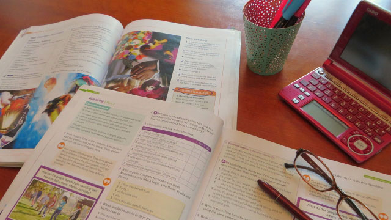

電子辞書。この文明の利器、教育界ではいまだに物議をかもす存在です。紙の辞書を使うべきか、電子辞書を使うべきか。辞書を本格的に必要とする中学校では、入学時に指定されることもあります。統計を取ったわけではありませんが、この段階ではどうやら紙の辞書が優勢な様子。
- 紙の辞書を使うことで、使い方を覚える
- 調べたい項目の前後の項目も一緒にみることで、知識に広がりを持たせる
- 子供は精密電子機器を壊しやすい
あたりが理由になっています。さらに、管理上、高価な電子辞書の盗難などがあるとやっかいという事情もあるかもしれません。
とりあえず、管理上の問題点はおいておいて、「使い方」と「一覧性」の問題について考えてみましょう。
まず、本の辞書の使い方を覚える必要性ですが、今後書籍の電子化がよりいっそう進むことを考えると、そこまで神経質になる必要はないでしょう。紙の辞書を使っていた世代には、「なんとなく紙の辞書の方が知識が頭に入る」と思われるかもしれませんが、それはただ、紙のフォーマットに慣れ親しんでいるからに過ぎません。
さらに、調べたい項目以外の項目を一覧できる利点については、「使い方」の問題とはことなり、電子辞書の明確な弱点でした。しかし、各社研究を重ね、工夫した結果、最近の電子辞書は非常に進化しています。引いた項目の文中に「リンク」を貼り、文中の気になる単語に飛ぶことができるようになっているのです。また、一項目を読み切った後、さらに画面下にスクロールしていると、自動的に次の項目に移る設定もあります。
電子辞書の利点
これらの弱点に比して、電子辞書の利点はなんでしょう。それは「スピード」と「情報量」につきます。スピードについてはいうまでもありません。生徒たちが辞書を引きたがらない最大の要因は「面倒くささ」にあります。それを乗り越えるお手軽さによって、どんな些細なことでも「ちょっと引いてみようかな」と行動する習慣が生まれます。次に、「情報量」。最新の電子辞書は20冊から30冊の辞書が内蔵されています。たとえば「漢和辞典」。紙の辞書で買った人もいるでしょうが、たぶんほとんど使用することはなかったことでしょう。重くて使用頻度の低い辞典はどんどん使われなくなります。しかし、電子辞書はとにかくお手軽。そしてコンパクトな筐体にすべての辞書が入っていますから、使用頻度の低い辞書も「ちょっと見てみようかな」となるわけです。
開発黎明期の電子辞書には確かに広がりがありませんでした。しかし、現在最新の辞書は、まさに「知識の世界を開く扉」であるといえます。私自身、よく保護者の方に「どちらがよいか」と問われますが、断然電子辞書をおすすめしています。自分も、苦手だった英語を克服できた最大のきっかけは電子辞書でした。気軽に調べ、気軽に英語を読む経験は、英語に対する無駄な苦手意識をすっぱり消してくれました。
進級進学のこの時期、是非最新の電子辞書もチェックしてみてくださいね！